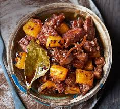

Pork Adobo Ingredients and Procedures

Pork Adobo Ingredients
- Boneless Pork Belly
- Vegetable Oil
- Salt
- Garlics
- Onions
- Ground Black Pepper
- Dried Bay Leaves
- Soy Souce
- Vinegar
- Water
Pork Adobo Procedures
- Slice the Boneless Pork Belly into proper cubes
- Preheat your Oil on a pot, Note: Set to High Heat Settings
- Diced your Garlic and Onions
- Place your slice pork cubes into the pot and saute
- Place your Diced Garlic and Onions into the Pot, Saute it and mix them well with the Sauted Pork Cubes
- Pour a bit of Soy Souce and Vinegar into the pot mixed it well, follow the 2:1 proportions and wait for it to boil
- Put a half glass of water and wait for it to boil again
- Once the liquid sauce decreased, adjust the setting to low heat settings
- this time, taste it, adjust the flavour by putting the soy souce or vinegar
Enjoy My #1 Favorite Food